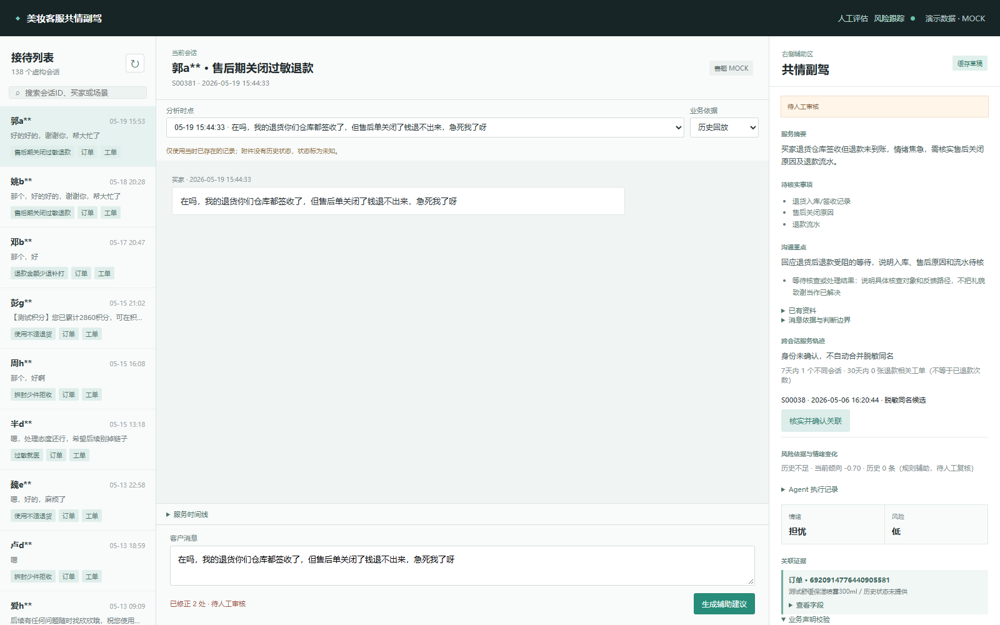

当前版本检查
| 检查 | 结果 | 范围 |
|---|
| 软件测试 | 348项通过 | 程序行为，不是模型准确率 |
| 页面与操作 | 桌面 / 390px手机 | 生成、审核、任务认领、状态历史；无脚本错误或横向溢出 |
| 场景彩排 | 退款 / 举报 / 少件 | 隔离数据库操作，不是线上客户试点 |
| 12例最终回复规则 | 声明0例 / 服务0例剩余检出 | 原稿10例16处系统修正保留；规则无检出不代替人工认可 |
| 本人回复复核 | 8条原稿可用，4条改后认可 | 12条收尾完成，0待确认；已看自动检查意见，非独立盲评 |
当前12个固定案例
| 顺序运行指标 | 当前V9 | 方法 |
|---|
| 输入 / 输出Token | 6783 / 1573 | 总计8356 Token |
| 系统中位 / 样本最大 | 2.83秒 / 3.69秒 | 原值2834.98 / 3685.6毫秒 |
| 模型生成 / 证据路径 | 11次 / 1次 | 各取首遍，无模型不可用降级 |
V8-5为8357 Token，本轮差1 Token不作显著降本结论。当前没有增加独立分类调用。固定案例、不同运行时段的结果不用于单因素速度归因，不是生产SLA或人工效率数据。
原30条标注：已见样本事后回归
| 指标 | 当前结果 | 解释 |
|---|
| 最终工作流意图 | 27/30，Macro-F1约0.6176 | 此前V8为21/30；规则意图另为26/30 |
| 最终基础情绪 | 21/30，Macro-F1约0.6511 | 沿用同一公开映射，本轮未提高 |
| 规则混合情绪 | 11/30 | 包含基础和场景标签，不与基础情绪直接算提升 |
| 最终风险等级 | 27/30 | 三条不适反馈的安全下限高于旧中级标签 |
| 高风险召回 | 不可计算 | 原人工标签中高/紧急正例为0 |
每例首遍，29次模型与1次证据路径，原标签未改。样本已参与开发，不能称独立90%准确率；情绪标签匹配也不等于消费者共情体验。本人复核为8条原V9可见草稿可用、4条改后认可，不称首轮12条全部正确；改稿未替换自动生成逻辑。实际视频未录制，人工效率缺完整任务级计时，不报告提升比例。
历史对照：不与当前测量混算
| 实验 | 结果 | 范围 |
|---|
| 2026-10-09 模型协议 | 总Token16368→15364，减少6.13% | 11个共同案例，两轮交替，两版各22次模型请求 |
| 2026-10-09 完整系统 | 总Token8980→7682，减少14.45% | 12例，包含1条证据路由；与纯模型对照分别报告 |
| 2026-10-13 CPU / 5060 | 模型中位17.18→3.82秒 | 固定相同提示，3案例交替两轮，各6次；保留首次慢请求 |
| 离线回复预审分流 | 总Token15326→11788，减少23.08% | 仅离线评审，不计作接待Token节约 |
以上未核算硬件、电费、生产并发或真实客服节省时间。原输出、失败与中间实验保留在开发环境。
工作台操作画面

原界面截图，未改写回复内容。使用虚构数据和隔离数据库，不是线上客户服务或人工实验成绩。